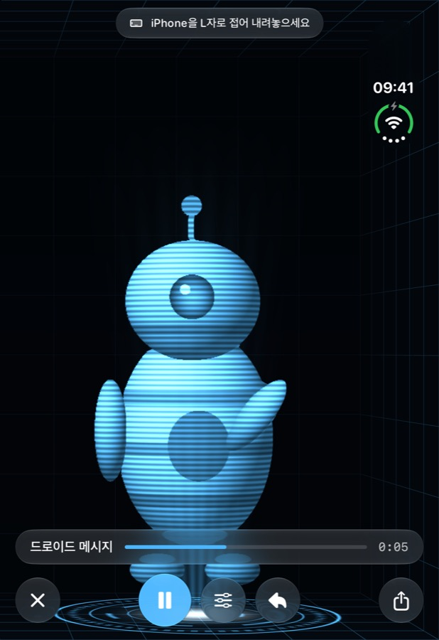

전화할 수 있는 홀로그램.
iPhone을 L자로 접으면 사랑하는 사람이 그 안에 3D로 나타나 빛의 바닥 위에 떠 있습니다. FaceTime으로 실시간 통화하고, 나를 촬영하고, 어떤 비디오든 홀로그램으로 만드세요.

iPhone을 L자로 접으면 사랑하는 사람이 그 안에 3D로 나타나 빛의 바닥 위에 떠 있습니다. FaceTime으로 실시간 통화하고, 나를 촬영하고, 어떤 비디오든 홀로그램으로 만드세요.
